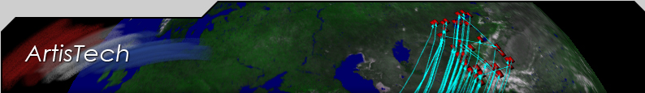

|  |
|
DARE (Decision Architectures Research Environment)
Customer: Army Research Lab The purpose of the Advanced Decision Architectures Collaborative Technology Alliance (ADACTA), a project funded through ARL, is to bring together the Army, academia, and technology companies to rapidly develop and transition to major army programs research products for knowledge management and decision support that facilitate soldier awareness and understanding of tactical situations. In order to facilitate evaluation of new research products, and experimentation with those products, we have developed the Decision Architecture Research Environment (DARE). DARE is a distributed research environment and experimental scenario that is deployed on ARL systems developed under programs such as Warrior’s Edge, Machine Translation for Horizontal Fusion, and C2CUT. This combined platform is then used to evaluate individual ADACTA research products, conduct experiments with those products, and study possible interactions between research products that may benefit the warfighter. DARE thus comprises a heterogeneous environment of planning, analysis, and display tools built to examine applications in a tactical decision-making environment. The core of DARE is a distributed network of software agents, utilizing a number of different techniques to communicate with a broad range of sensors, input devices, and intelligent systems components. The key to the DARE architecture is the pragmatic use of software agents – we utilize software agents because they are distributed, well-encapsulated, extensible, easily reconfigurable, and mobile. The agent architecture utilized in DARE is the NOMADS system developed at Institute for Human and Machine Cognition, (a research institute shared among the universities in the University of Florida System), or IHMC, http://www.ihmc.us/research/projects/nomads/ an ADACTA partner. In addition to supporting distributed networks of software agents with weak mobility, NOMADS is built on top of the Mockets architecture, increasing agent reliability in a mobile, ad-hoc networking environment.
|
Related Pages |
Copyright Aristech, Inc., all rights reserved